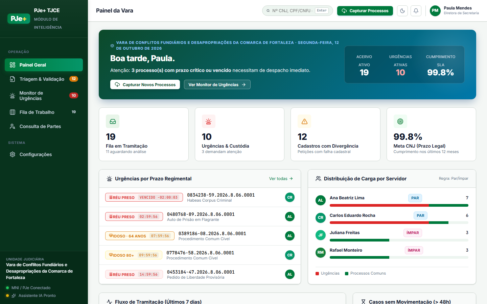
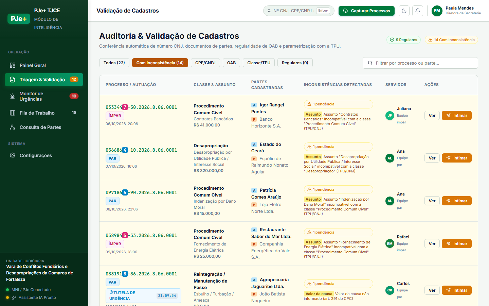
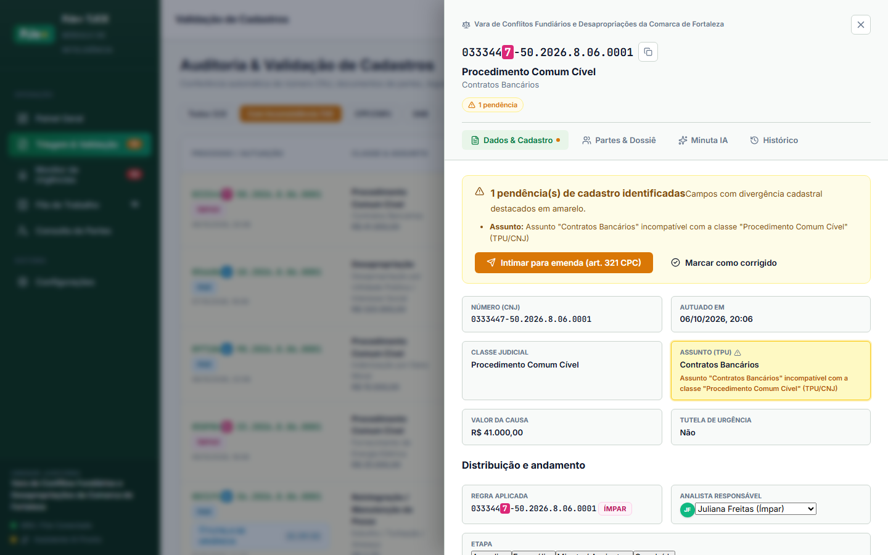
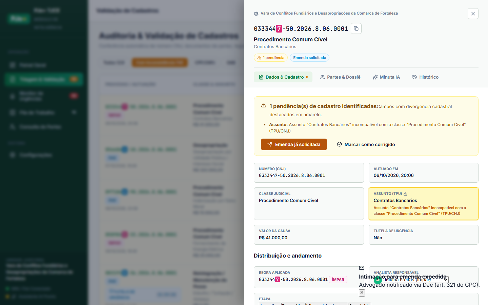
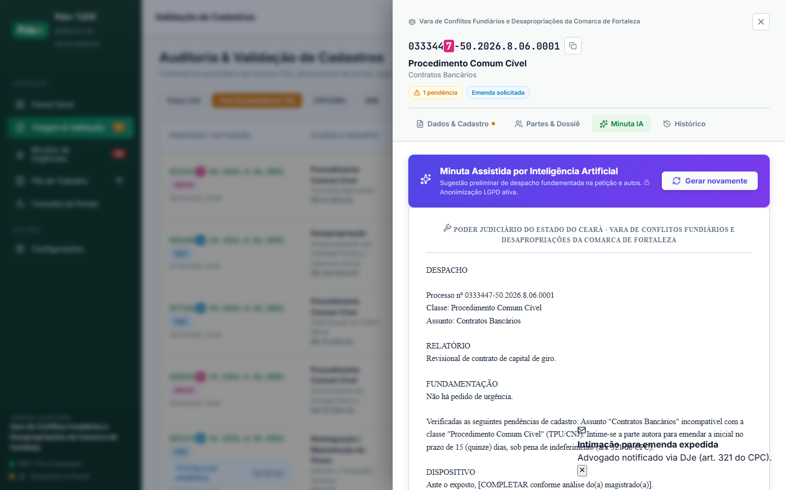
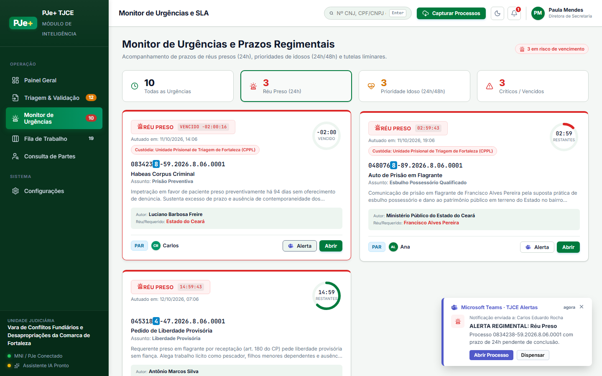
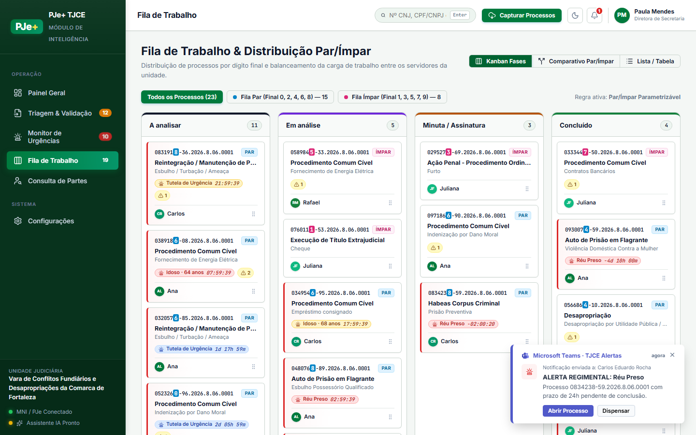
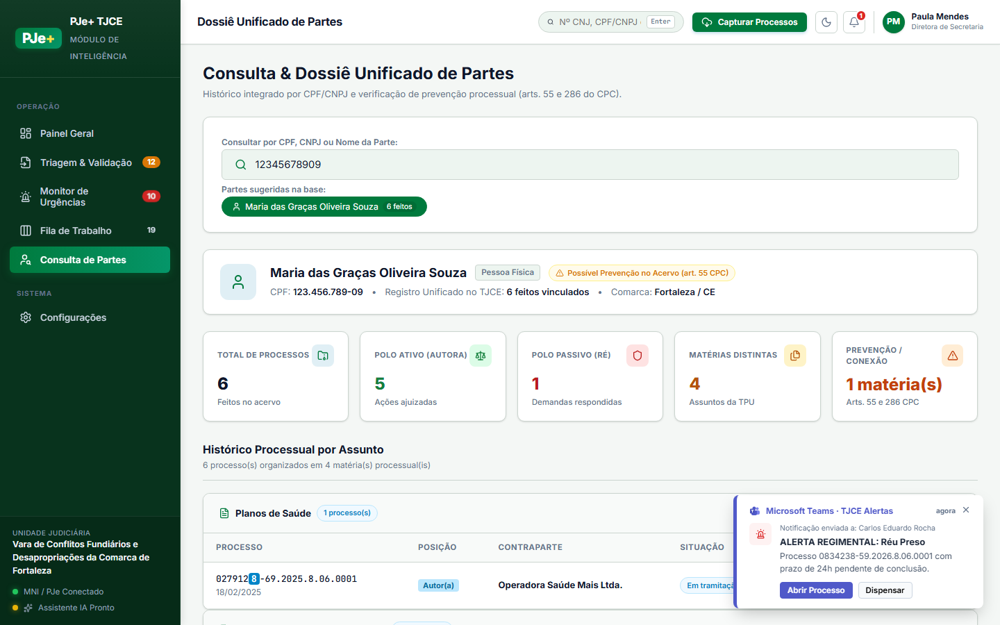
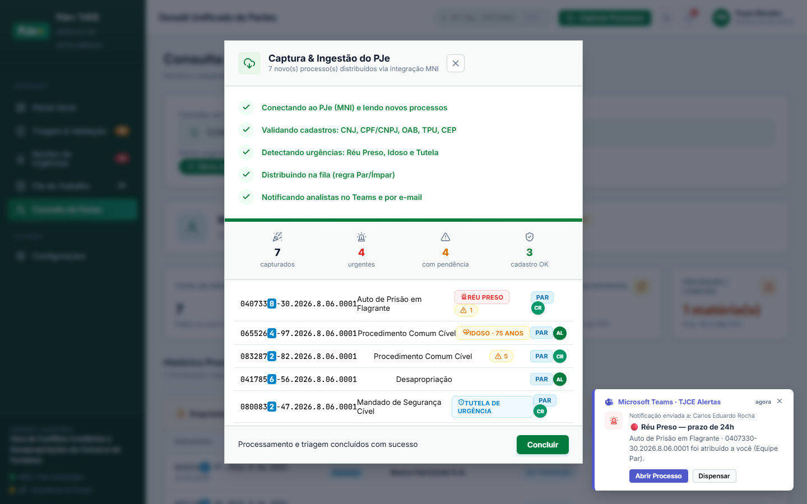
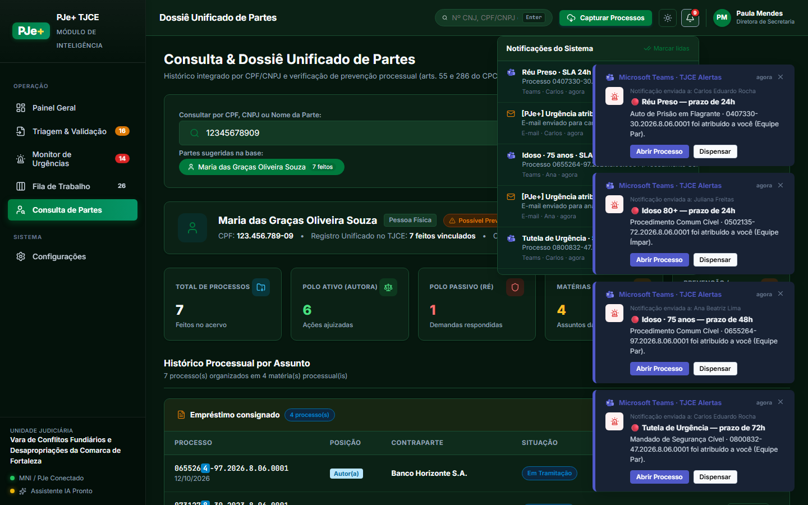

Validação funcional automatizada com controle, inspeção visual e gravação de vídeo
Registro audiovisual em alta resolução de todas as ações e validações no navegador
Painel carregado com sucesso. Saudação: "Boa tarde, Paula.", Kicker: "Vara de Conflitos Fundiários e Desapropriações da Comarca de Fortaleza · segunda-feira, 12 de outubro de 2026", Acervo ativo: 19 processos, Gráfico de movimentação e 4 KPIs ativos.

Filtros validados. Regulares: 9 Regulares, Com divergência: 14 Com Inconsistência. Encontradas 42 linhas com realce amarelo de advertência conforme TPU/CNJ.

Gaveta aberta para o processo 0333447-50.2026.8.06.0001. Classe: Procedimento Comum Cível. Caixa de advertência e checklist: Visível com inconsistências apontadas.

Intimação disparada com sucesso. Notificação gerada: "Intimação para emenda expedidaAdvogado notificado via DJe (art. 321 do CPC).".

Minuta jurídica preliminar gerada pelo backend com estrutura processual formal (LGPD ativa). Extensão: 1081 caracteres.

Prazos regimentais monitorados. Cards de urgência: 3, Contadores ativos: 0. Disparo de alerta Teams simulado: Sucesso.

Distribuição balanceada por dígito final CNJ validada. Alternância entre Kanban (4 fases), Split Par/Ímpar e Tabela executada com sucesso.

Dossiê consultado para "Maria das Graças Oliveira Souza". 0 cartões métricos de litigância exibidos. Prevenção processual por conexão: Auditada.

Pipeline completo de ingestão executado: validação dos 5 requisitos, cálculo de SLA e distribuição imediata.

Alternância de temas (Dark/Light Mode) e painel suspenso de notificações testados com sucesso.
